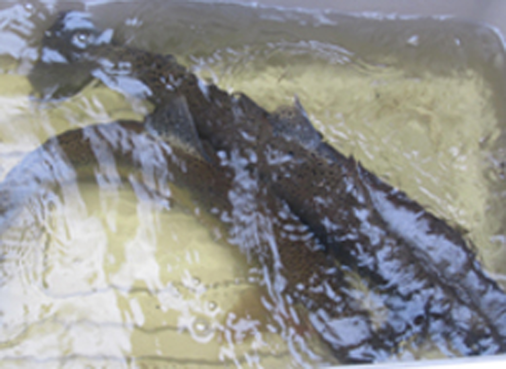
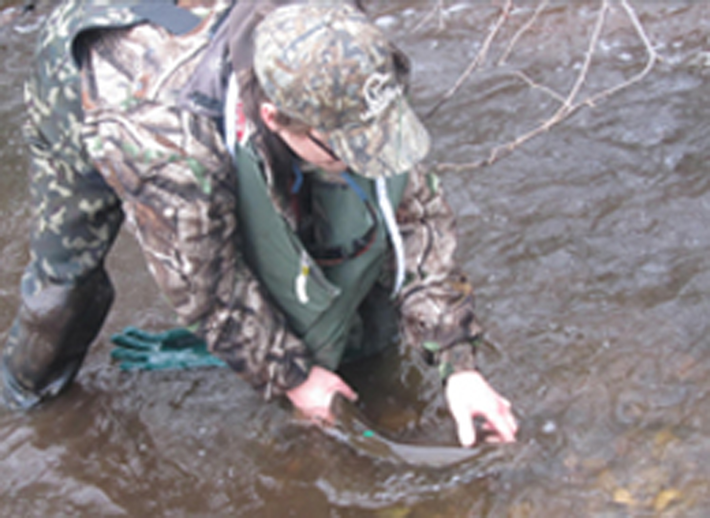
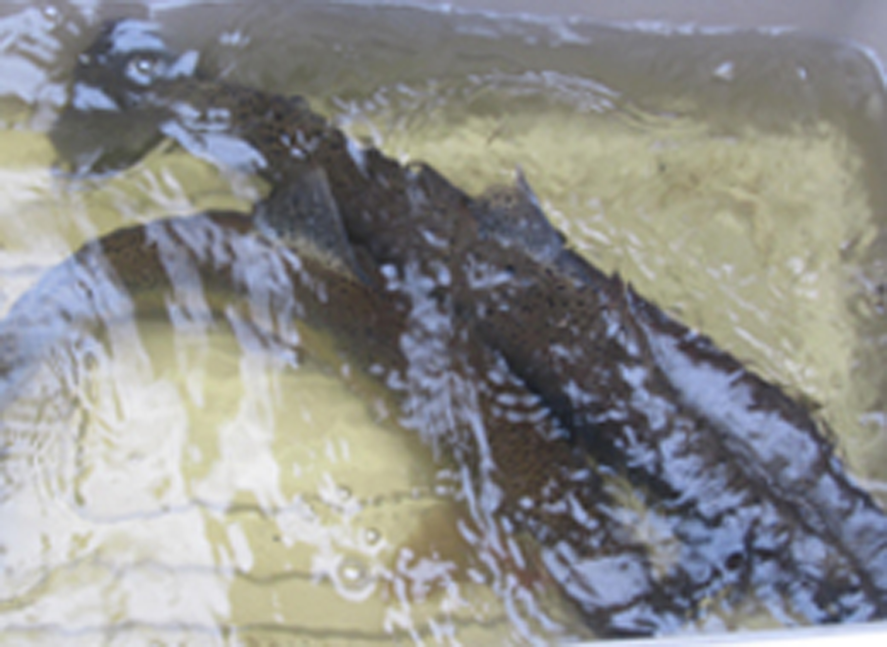
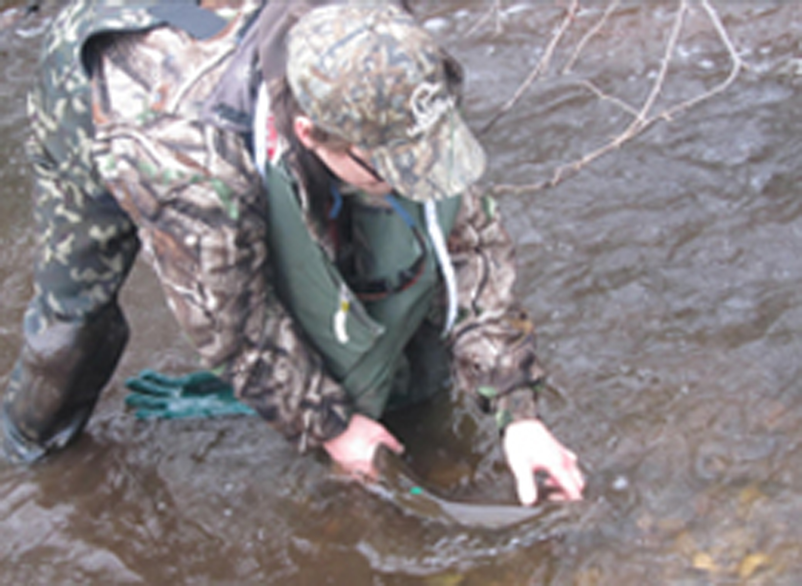

The TRAA Trout Hatchery began in the mid-1980's as an outdoor upwelling box located adjacent to Komoka Creek on private property. While it was a simple and rustic affair, the TRAA enjoyed incredible egg hatching and fry survivability rates for several seasons.
The picture on the left shows the front of the upwelling box with the individual outlets for each segregated cell emptying into a trough running along the front of the box. The shot on the right shows the back of the upwelling box with the spring source supply pipe feeding each separate valve for every cell. The stainless steel tank in the background was re-purposed from a milking operation into a fry holding tank.The box on the top of the tank housed the automatic feeder.
While this setup served us well it was also very challenging to maintain. We had to pack the upwelling box with straw bales to keep the water in the cells from freezing. Members of the Trout Hatchery Rotation had to huddle over each cell picking eggs in wind-driven rain, sleet and snow. Something had to be done so a new setup was housed in a new enclosure.
 


